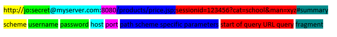

Hyper Text Transfer Protocol by Bradley Mitchell
HTTP (Hypertext Transfer Protocol) provides a network protocol standard that Web browsers and servers use to communicate.
History of HTTP
Tim Berners-Lee created the initial HTTP in the early 1990s as part of his work in defining the original World Wide Web. Three primary versions were widely deployed during the 1990s
HTTP 0.9 (for support of basic hypertext documents)
HTTP 1.0 (extensions to support rich Web sites and scalability)
HTTP 1.1 (developed to address performance limitations of HTTP 1.0, specified in Internet RFC 2068)
The latest version - HTTP 2.0 - became an approved standard in 2015. It maintains backward compatibility with HTTP 1.1 but offers additional performance enhancements.
While standard HTTP does not encrypt traffic sent over a network, the HTTPS standard was developed to add encryption to HTTP via the use of (orignially) Secure Sockets Layer (SSL) or (later) Transport Layer Security (TLS).
How does HTTP works?
HTTP is an application layer protocol built on top of TCP that uses a client-server communication model. HTTP clients (such as Web browsers) and Web servers communicate via HTTP request and response messages. The three main HTTP message types are GET, POST, and HEAD.
HTTP is a stateless communication protocol where servers do not keep information about clients in between request.
HTTP provides support for other functionalities such as:
- cache control
- content media type (MIME) specification
- language and character set specification
- content/transfer codings
- content negotiation
- client-server protocol negotiations
- persistent connections
- request pipelining/multiplexing
- authorization/authentication
HTTP Resource Addressing
HTTP resource are identified using URL's:
Authority- user information or authentication credentials; host
Query-Typically provided as key value pairs with apersand(&) separators or between key/values pairs. May be URL-encoded.
Fragment Identifier-subsection in your document
HTTP GET messages sent to a Web server contain only a URL. Zero or more optional data parameters may be appended to the end of the URL.
The HTTP server processes the optional data portion of the URL if present and returns the result (a Web page or element of a Web page) to the browser.
HTTP POST messages place any optional data parameters in the body of the request message rather than adding them to the end of the URL.
HTTP HEAD request work the same as GET requests.
HTTP Fundamentals
HTTP typically runs on top of TCP/IP, using TCP port 80 by default (TCP port 443 for HTTPS).
HTTP resources are identified using URIs (specifically, HTTP URLs)
o Scheme (http: or https:)
o (optional) authentication information
o Host and (optional) port number
o Path (resolved to the document root on the server) to the resource
o (optional) scheme-specific parameters
o (optional) URL-encoded query
o (optional) bookmark (or fragment identifier)

Standard Methods
Some standard methods of HTTP also includes:
PUT, DELETE, OPTIONS, TRACE, CONNECT
PUT - The PUT method requests that the enclosed entity be stored under the supplied Request-URI.
DELETE - The DELETE method requests that the origin server delete the resource identified by the Request-URI. This method MAY be overridden by human intervention (or other means) on the origin server. The client cannot be guaranteed that the operation has been carried out, even if the status code returned from the origin server indicates that the action has been completed successfully. However, the server SHOULD NOT indicate success unless, at the time the response is given, it intends to delete the resource or move it to an inaccessible location.
OPTIONS - The OPTIONS method represents a request for information about the communication options available on the request/response chain identified by the Request-URI. This method allows the client to determine the options and/or requirements associated with a resource, or the capabilities of a server, without implying a resource action or initiating a resource retrieval.
TRACE - The TRACE method is used to invoke a remote, application-layer loop- back of the request message.
CONNECT - This specification reserves the method name CONNECT for use with a proxy that can dynamically switch to being a tunnel.
Read more about standard methods of HTTP
here
Extension Methods
Some extension methods of HTTP also includes:
PROPFIND, PROPPATCH, MKCOL, COPY, MOVE, LOCK, UNLOCK, DESTINATION
PROPFIND - used to retrieve properties, stored as XML, from a web resource. It is also overloaded to allow one to retrieve the collection structure (a.k.a. directory hierarchy) of a remote system.
PROPPATCH - The PROPPATCH method processes instructions specified in the request body to set and/or remove properties defined on the resource identified by the Request-URI.
MKCOL - MKCOL creates a new collection resource at the location specified by the Request-URI. If the Request-URI is already mapped to a resource, then the MKCOL MUST fail.
COPY - The COPY method creates a duplicate of the source resource identified by the Request-URI, in the destination resource identified by the URI in the Destination header. The Destination header MUST be present. The exact behavior of the COPY method depends on the type of the source resource.
MOVE - The MOVE operation on a non-collection resource is the logical equivalent of a copy (COPY), followed by consistency maintenance processing, followed by a delete of the source, where all three actions are performed in a single operation. The consistency maintenance step allows the server to perform updates caused by the move, such as updating all URLs, other than the Request-URI that identifies the source resource, to point to the new destination resource.
LOCK - Any resource that supports the LOCK method MUST, at minimum, support the XML request and response formats defined herein. This method is neither idempotent nor safe.
UNLOCK - The UNLOCK method removes the lock identified by the lock token in the Lock-Token request header. The Request-URI MUST identify a resource within the scope of the lock.
Read more about extension methods of HTTP
here
Instead of replying with the full contents of the URL, the Web server sends back only the Web page header information (contained inside the HTML HEAD section).
The browser initiates communication with an HTTP server by initiating a TCP connection to the server. Web browsing sessions use server port 80 by default although other ports such as 8080 are sometimes used instead.
Once a session is established, users of Web browsers trigger the sending and receiving of HTTP messages by visiting Web pages that have HTTP (or HTTPS) URLs.
Issues with HTTP
Messages transmitted over HTTP can fail to be delivered successfully for several reasons:
- user error
- malfunction of the Web browser
- malfunction of the Web server
- errors in creation of Web pages
- temporary Internet network glitches
When these failures occur, the protocol captures the cause of the failure (if possible) and reports an error code back to the browser. Error 404 ("Page not found"), for example, became famous in the early days of the Internet when issues with Web pages and navigation were more common.
Response Header Fields
| Accept ranges |
Age |
ETag |
Location |
Proxy |
Retry |
Server |
Vary |
Request Header Fields
| Accept |
Content encoding |
Content type |
Expires |
Max-Forwards |
| Accept-Encoding |
Content location |
content MO5 |
if-Modified-Since |
From |
| Accept-Charset |
Content encoding |
Hosting algorithm |
if-matched |
Referer |
| Accept-Language |
Content language |
Hash value |
if-modified |
Range |
| Authorization |
Content length |
Host |
if-none-matched |
Proxy Authorization |
| Allow |
Content type |
Expect |
Last modified |
user-Agent |
Status Code
Informal (1xx)
- 100 Continue
- The server has received the request headers and the client should proceed to send the request body (in the case of a request for which a body needs to be sent; for example, a POST request).
- 101 Switching Protocols
- The requester has asked the server to switch protocols and the server has agreed to do so.
- 102 Processing
- A WebDAV request may contain many sub-requests involving file operations, requiring a long time to complete the request. This code indicates that the server has received and is processing the request, but no response is available yet. This prevents the client from timing out and assuming the request was lost.
Success (2xx)
- 200 OK
- Standard response for successful HTTP requests. The actual response will depend on the request method used. In a GET request, the response will contain an entity corresponding to the requested resource. In a POST request, the response will contain an entity describing or containing the result of the action.
- 201 Created
- The request has been fulfilled, resulting in the creation of a new resource.
- 202 Accepted
- The request has been accepted for processing, but the processing has not been completed. The request might or might not be eventually acted upon, and may be disallowed when processing occurs.
- 203 Non-Authoritative Information
- The server is a transforming proxy (e.g. a Web accelerator) that received a 200 OK from its origin, but is returning a modified version of the origin's response.
- 204 No Content
- The server successfully processed the request and is not returning any content.
- 205 Reset Content
- The server successfully processed the request, but is not returning any content. Unlike a 204 response, this response requires that the requester reset the document view.
- 206 Partial Content
- The server is delivering only part of the resource (byte serving) due to a range header sent by the client. The range header is used by HTTP clients to enable resuming of interrupted downloads, or split a download into multiple simultaneous streams.
Redirection (3xx)
- 300 Multiple Choices
- Indicates multiple options for the resource from which the client may choose (via agent-driven content negotiation). For example, this code could be used to present multiple video format options, to list files with different filename extensions, or to suggest word-sense disambiguation.
- 301 Moved Permanently
- This and all future requests should be directed to the given URI.
- 302 Found
- This is an example of industry practice contradicting the standard. The HTTP/1.0 specification (RFC 1945) required the client to perform a temporary redirect (the original describing phrase was "Moved Temporarily"), but popular browsers implemented 302 with the functionality of a 303 See Other. Therefore, HTTP/1.1 added status codes 303 and 307 to distinguish between the two behaviours.
- 303 See Other
- The response to the request can be found under another URI using a GET method. When received in response to a POST (or PUT/DELETE), the client should presume that the server has received the data and should issue a redirect with a separate GET message.
- 304 Not Modified
- Indicates that the resource has not been modified since the version specified by the request headers If-Modified-Since or If-None-Match. In such case, there is no need to retransmit the resource since the client still has a previously-downloaded copy.
- 305 Use Proxy
- The requested resource is available only through a proxy, the address for which is provided in the response. Many HTTP clients (such as Mozilla and Internet Explorer) do not correctly handle responses with this status code, primarily for security reasons.
- 306 (Unused)
- No longer used. Originally meant "Subsequent requests should use the specified proxy."
- 307 Temporary Redirect
- In this case, the request should be repeated with another URI; however, future requests should still use the original URI. In contrast to how 302 was historically implemented, the request method is not allowed to be changed when reissuing the original request. For example, a POST request should be repeated using another POST request.
- 308 Permanent Redirect
- The request and all future requests should be repeated using another URI. 307 and 308 parallel the behaviors of 302 and 301, but do not allow the HTTP method to change. So, for example, submitting a form to a permanently redirected resource may continue smoothly.
Client Error (4xx)
- 400 Bad Request
- The server cannot or will not process the request due to an apparent client error (e.g., malformed request syntax, too large size, invalid request message framing, or deceptive request routing).
- 401 Unauthorized
- Similar to 403 Forbidden, but specifically for use when authentication is required and has failed or has not yet been provided. The response must include a WWW-Authenticate header field containing a challenge applicable to the requested resource.
- 402 Payment Required
- Reserved for future use. The original intention was that this code might be used as part of some form of digital cash or micropayment scheme, but that has not happened, and this code is not usually used. Google Developers API uses this status if a particular developer has exceeded the daily limit on requests.
- 403 Forbidden
- The request was valid, but the server is refusing action. The user might not have the necessary permissions for a resource.
- 404 Not Found
- The requested resource could not be found but may be available in the future. Subsequent requests by the client are permissible.
- 405 Method Not Allowed
- A request method is not supported for the requested resource; for example, a GET request on a form that requires data to be presented via POST, or a PUT request on a read-only resource.
- 406 Not Acceptable
- The requested resource is capable of generating only content not acceptable according to the Accept headers sent in the request.
- 407 Proxy Authentication Required
- The client must first authenticate itself with the proxy.
- 408 Request Timeout
- The server timed out waiting for the request. According to HTTP specifications: "The client did not produce a request within the time that the server was prepared to wait. The client MAY repeat the request without modifications at any later time."
- 409 Conflict
- Indicates that the request could not be processed because of conflict in the request, such as an edit conflict between multiple simultaneous updates.
- 410 Gone
- Indicates that the resource requested is no longer available and will not be available again. This should be used when a resource has been intentionally removed and the resource should be purged. Upon receiving a 410 status code, the client should not request the resource in the future. Clients such as search engines should remove the resource from their indices.
- 411 Length Required
- The request did not specify the length of its content, which is required by the requested resource.
- 412 Precondition Failed
- The server does not meet one of the preconditions that the requester put on the request.
- 413 Request Entity Too Large
- The request is larger than the server is willing or able to process. Also called "Payload Too Large".
- 414 Request-URI Too Long
- The URI provided was too long for the server to process. Often the result of too much data being encoded as a query-string of a GET request, in which case it should be converted to a POST request.
- 415 Unsupported Media Type
- The request entity has a media type which the server or resource does not support. For example, the client uploads an image as image/svg+xml, but the server requires that images use a different format.
- 416 Requested Range Not Satisfiable
- The client has asked for a portion of the file (byte serving), but the server cannot supply that portion. For example, if the client asked for a part of the file that lies beyond the end of the file
- 417 Expectation Failed
- The server cannot meet the requirements of the Expect request-header field.
- 421 Misdirected Request
- The request was directed at a server that is not able to produce a response (for example because a connection reuse).
- 428 Precondition Required
- The origin server requires the request to be conditional. Intended to prevent "the 'lost update' problem, where a client GETs a resource's state, modifies it, and PUTs it back to the server, when meanwhile a third party has modified the state on the server, leading to a conflict."
- 429 Too Many Requests
- The origin server requires the request to be conditional. Intended to prevent "the 'lost update' problem, where a client GETs a resource's state, modifies it, and PUTs it back to the server, when meanwhile a third party has modified the state on the server, leading to a conflict."
- 431 Request Header Fields Too Large
- The server is unwilling to process the request because either an individual header field, or all the header fields collectively, are too large.
- 451 Unavailable For Legal Reasons
- A server operator has received a legal demand to deny access to a resource or to a set of resources that includes the requested resource. The code 451 was chosen as a reference to the novel Fahrenheit 451.
Server Error (5xx)
- 500 Internal Server Error
- A generic error message, given when an unexpected condition was encountered and no more specific message is suitable.
- 501 Not Implemented
- The server either does not recognize the request method, or it lacks the ability to fulfill the request. Usually this implies future availability (e.g., a new feature of a web-service API).
- 502 Bad Gateway
- The server was acting as a gateway or proxy and received an invalid response from the upstream server.
- 503 Service Unavailable
- The server is currently unavailable (because it is overloaded or down for maintenance). Generally, this is a temporary state.
- 504 Gateway Timeout
- The server was acting as a gateway or proxy and did not receive a timely response from the upstream server.
- 505 HTTP Version Not Supported
- The server does not support the HTTP protocol version used in the request.
- 511 Network Authentication Required
- The client needs to authenticate to gain network access. Intended for use by intercepting proxies used to control access to the network (e.g., "captive portals" used to require agreement to Terms of Service before granting full Internet access via a Wi-Fi hotspot).
- 598 Network read timeout error
- Used by some HTTP proxies to signal a network read timeout behind the proxy to a client in front of the proxy.
- 599 Network connect timeout error
- Used to indicate when the connection to the network times out.